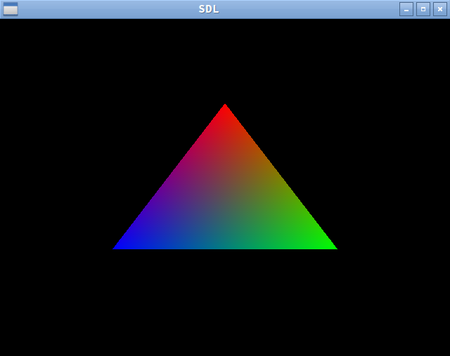

This is a single-file OpenGL "hello world" boilerplate implementation. It assumes that SDL and GLEW are already installed.
#include <GL/glew.h> #include <SDL2/SDL.h> #include <stdio.h> #include <string> const std::string vs = "#version 330\n" "layout(location = 0) in vec4 position;\n" "layout(location = 1) in vec4 color;\n" "smooth out vec4 vertex_color;\n" "void main() {\n" " gl_Position = position;\n" " vertex_color = color;\n" "}\n" "" ; const std::string fs = "#version 330\n" "smooth in vec4 vertex_color;\n" "out vec4 out_color;\n" "void main() {\n" " out_color = vertex_color;\n" "}\n" "" ; bool create_shader(GLenum shader_kind, const char* shader_src, GLuint* out_shader) { GLuint shader = glCreateShader(shader_kind); glShaderSource(shader, 1, &shader_src, NULL); glCompileShader(shader); GLint status; glGetShaderiv(shader, GL_COMPILE_STATUS, &status); if (status == GL_FALSE) { GLint log_len; glGetShaderiv(shader, GL_INFO_LOG_LENGTH, &log_len); GLchar log[4096]; glGetShaderInfoLog(shader, log_len, NULL, log); const char* kind; switch (shader_kind) { case GL_VERTEX_SHADER: kind = "vertex"; break; case GL_FRAGMENT_SHADER: kind = "fragment"; break; default: kind = "unknown"; break; } fprintf(stderr, "Compile failure in %s shader: %s\n", kind, log); return false; } *out_shader = shader; return true; } bool build_shader_program(const char* vs, const char* fs, GLuint* out_program) { GLuint vshader; GLuint fshader; if (!create_shader(GL_VERTEX_SHADER, vs, &vshader)) return false; if (!create_shader(GL_FRAGMENT_SHADER, fs, &fshader)) return false; GLuint program = glCreateProgram(); glAttachShader(program, vshader); glAttachShader(program, fshader); glLinkProgram(program); GLint status; glGetProgramiv(program, GL_LINK_STATUS, &status); if (status == GL_FALSE) { GLint log_len; glGetProgramiv(program, GL_INFO_LOG_LENGTH, &log_len); GLchar log[4096]; glGetProgramInfoLog(program, log_len, NULL, log); fprintf(stderr, "Shader linker failure: %s\n", log); return false; } glDetachShader(program, vshader); glDetachShader(program, fshader); *out_program = program; return true; } int main() { if (SDL_Init(SDL_INIT_VIDEO) < 0) return 1; SDL_Window *window = SDL_CreateWindow("SDL", SDL_WINDOWPOS_UNDEFINED, SDL_WINDOWPOS_UNDEFINED, 640, 480, SDL_WINDOW_SHOWN | SDL_WINDOW_OPENGL ); SDL_GLContext gl_context = SDL_GL_CreateContext(window); if (gl_context == NULL) { fprintf(stderr, "Error in creating the OpenGL context\n"); return 1; } const unsigned char* version = glGetString(GL_VERSION); if (version == NULL) { fprintf(stderr, "Error in getting the OpenGL version\n"); return 1; } SDL_GL_MakeCurrent(window, gl_context); SDL_GL_SetAttribute(SDL_GL_CONTEXT_MAJOR_VERSION, 3); SDL_GL_SetAttribute(SDL_GL_CONTEXT_MINOR_VERSION, 3); // MUST make a context AND make it current BEFORE glewInit()! glewExperimental = GL_TRUE; GLenum glew_status = glewInit(); if (glew_status != 0) { fprintf(stderr, "GLEW init error: %s\n", glewGetErrorString(glew_status)); return 1; } const float triangle_vertices[] = { // position 0.0f, 0.5f, 0.0f, 1.0f, 0.5f, -0.366f, 0.0f, 1.0f, -0.5f, -0.366f, 0.0f, 1.0f, // color 1.0f, 0.0f, 0.0f, 1.0f, 0.0f, 1.0f, 0.0f, 1.0f, 0.0f, 0.0f, 1.0f, 1.0f }; GLuint shader_program; if (!build_shader_program(vs.c_str(), fs.c_str(), &shader_program)) { SDL_Quit(); return 0; } GLuint vao; glGenVertexArrays(1, &vao); glBindVertexArray(vao); GLuint triangle_vbo; glGenBuffers(1, &triangle_vbo); glBindBuffer(GL_ARRAY_BUFFER, triangle_vbo); glBufferData( GL_ARRAY_BUFFER, sizeof(triangle_vertices), triangle_vertices, GL_STATIC_DRAW ); glEnableVertexAttribArray(0); glEnableVertexAttribArray(1); glVertexAttribPointer(0, 4, GL_FLOAT, GL_FALSE, 0, 0); glVertexAttribPointer(1, 4, GL_FLOAT, GL_FALSE, 0, (void*)48); glBindVertexArray(0); bool running = true; while (running) { SDL_Event e; while (SDL_PollEvent(&e)) { if (e.type == SDL_QUIT || (e.type == SDL_KEYUP && e.key.keysym.sym == SDLK_ESCAPE)) { running = false; } } glClearColor(0.0, 0.0, 0.0, 0.0); glClear(GL_COLOR_BUFFER_BIT); glUseProgram(shader_program); glBindVertexArray(vao); glDrawArrays(GL_TRIANGLES, 0, 3); glUseProgram(0); SDL_GL_SwapWindow(window); SDL_Delay(20); } SDL_GL_DeleteContext(gl_context); SDL_Quit(); return 0; }
sdl2-opengl.cpp
Compile with:
$ g++ sdl2-opengl.cpp -Wall -lSDL2 -lGL -lGLEW
